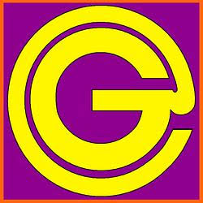
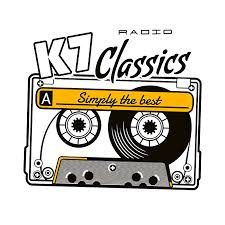
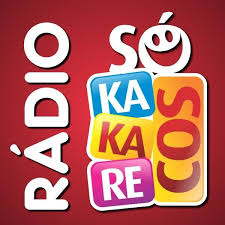
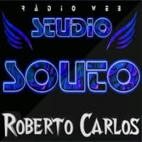
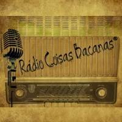
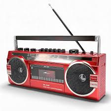

Radio gold Instrumental
Música Istrumental de Qualidade

k7radioclassics
A rádio flasback K7
Saudade FM
Retro de Qualidade

Só kakarecos
volte ao Passado
MGT Love Hits
Para apaixonados

Studio Souto Sertanejo Raiz
Sertanejo Raiz

Studio Souto Roberto Carlos
Roberto Carlos!!!, precisa falar?

radiocoisasbacanas
Retro de Qualidade

Fita Cassete
Retro
Studio Souto Jovem Guarda
Jovem Guarda
KCSM
Jazz
Miled Music José José
José José - Principe do México

Milionário e José Rico
Milionário e José Rico